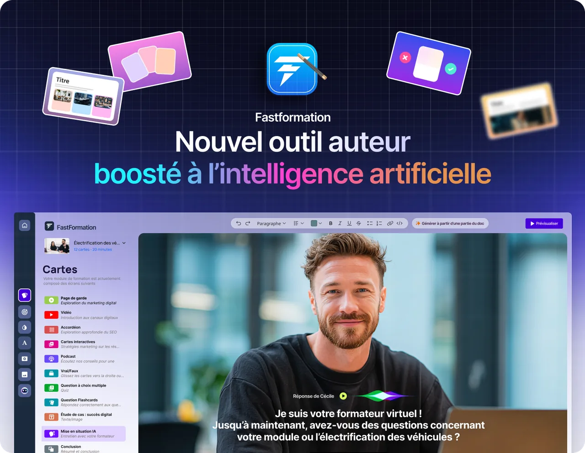
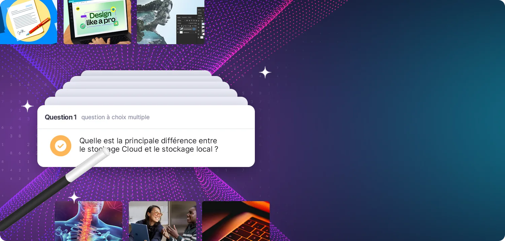
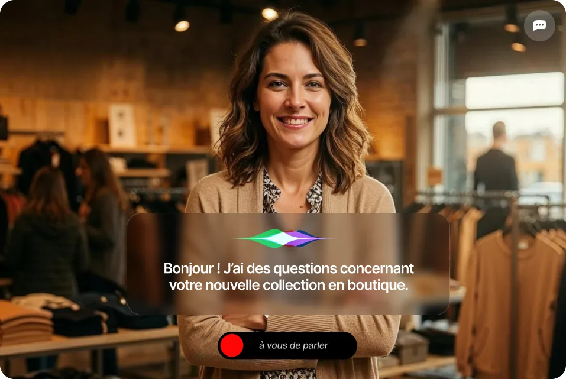

Générez vos modules de formation, co‑créez avec l’intelligence artificielle et gagnez de précieuses heures de création.
Outils IA
Dès aujourd’hui, découvrez les innovations d’Onlineformapro et tirez profit de la puissance des IA génératives dans votre processus de formation.
Découvrez les innovations d’Onlineformapro et tirez profit de la révolution des IA génératives.
Générez vos modules de formation, co‑créez avec l’intelligence artificielle et gagnez de précieuses heures de création.

Créez des quiz interactifs en un clic à partir de vos ressources existantes, simplifiant l’évaluation des connaissances.
Générez des podcasts pédagogiques interactifs avec l’IA en 2 minutes, où vos apprenants prennent la parole.

Donnez vie à vos propres scénarios : vos apprenants s’entraînent face à des agents IA qui s’adaptent en temps réel à leurs arguments.
Avec Fastformation, nous avons complètement réinventé la création de modules de formation. Vos ressources pédagogiques prennent vie grâce à une multitude d’activités interactives et d’innovations technologiques : mises en situation avec l’IA, coach intelligent qui analyse les performances et accompagne vos apprenants.
Tester FastFormation
Générez votre formation à partir de vos ressources pédagogiques. Si vous n’en avez pas, un simple prompt suffit !
Mises en situation, flashcards, podcast, vrai/faux : pour des modules vivants et engageants.
Vos formations disponibles sur mobile et tablette, partout et en tout temps.
Il analyse les réponses, détecte les points faibles, encourage les réussites et propose des conseils personnalisés.
Notre générateur de quiz, alimenté par l’intelligence artificielle, vous offre la possibilité d’évaluer vos apprenants sur n’importe quelle thématique de formation et à n’importe quel niveau.
Demander une démo
En un clic, avec feedbacks intégrés, prêtes à être déployées à vos apprenants.
Générez et éditez 5 types de questions pouvant être générées automatiquement.
L’IA vous propose des images libres de droits en rapport avec vos questions.
La génération automatique de quiz à partir de vos documents PDF, DOCX, c’est aujourd’hui possible !
Il y a peu, créer un podcast de qualité demandait des heures de préparation, d’enregistrement et de montage. Désormais, deux IA se mettent à discuter sur votre thème, comme dans un véritable talk‑show, et l’apprenant peut à tout moment les interrompre pour poser des questions.
Demander une démoDéfinissez le sujet que vous souhaitez transformer en podcast interactif.
Ajoutez des sujets, des précisions ou des exemples : l’IA intègre vos modifications.
Documents, audio et vidéo, images, pages web et YouTube : l’IA en extrait la matière.
Enrichissez le script avec des informations récentes, en un seul clic.
Des interlocuteurs virtuels dotés d’une véritable intelligence situationnelle : un client mécontent, une nouvelle recrue, un prospect exigeant, capables de converser de manière fluide et naturelle, à l’oral comme à l’écrit.
Demander une démo
Vous importez vos processus, vos catalogues produits et vos grilles d’évaluation.
L’IA génère des avatars qui conversent de manière fluide et naturelle.
Le droit à l’erreur est total, ce qui lève les blocages psychologiques.
L’outil analyse instantanément la performance selon vos critères d’évaluation.
Innover pour l’équité
Donner à chacun les moyens d’apprendre avec les technologies d’IA, c’est déjà changer demain.
Chez Onlineformapro, nous refusons que l’IA soit un outil d’exclusion ou de standardisation. Nous l’avons pensée comme un levier d’équité : un moyen d’adapter les parcours, de valoriser chaque profil, de répondre aux besoins réels, dans leur diversité.
Demandez vos codes de démonstration et testez la puissance de notre intelligence artificielle pour créer des modules que vos apprenants vont adorer.